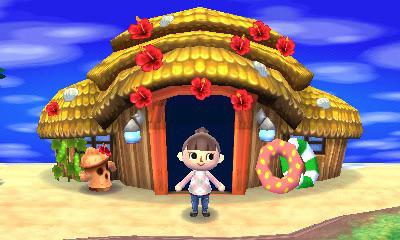
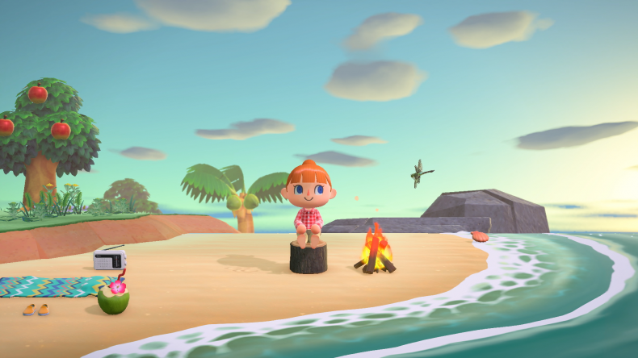
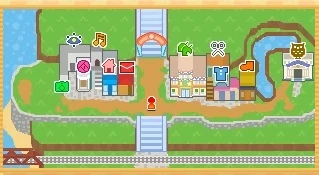
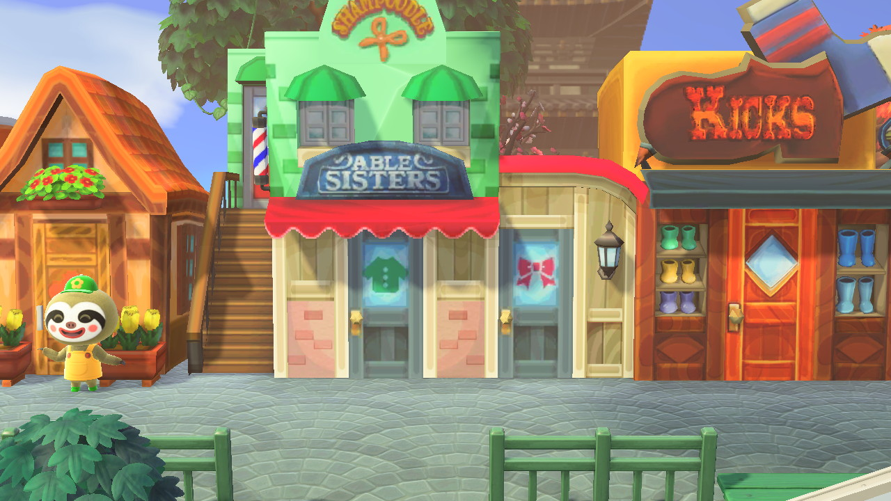
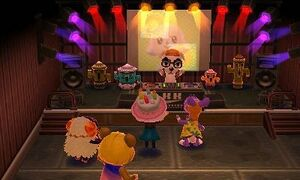
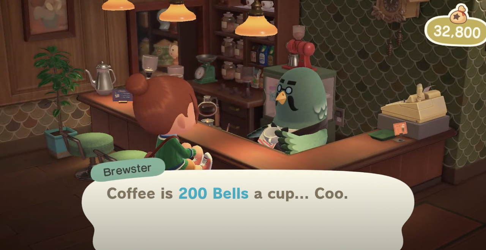

Animal Crossing provides players with various attractions to further enhance the gaming experience such as Islands, Main Street, Stores, Club 101, the Museum, the Roost and more.
In Animal Crossing New Horizons, the randomized islands lead players to different seasons and times of day, making the experience more fun. On these islands, you can gather new materials like vines and food. In Animal Crossing New Leaf, the island allows players to participate in games like balloon hunt, bug catching, hammer tour, item matching and more, allowing players to win medals and exchange for prizes.
Island Tour: New Leaf
 Main Street in Animal Crossing: New Leaf is a bustling shopping district where players can visit various shops and attractions. Players can purchase stylish clothing and furniture or even enjoy a makeover at the local salon, allowing them to alter their character's look. Beyond shopping, Main Street offers educational and entertaining experiences, such as the museum, where players can display and learn about fossils, rare fish, and insects they've collected.
Main Street: Shopping District
 For nightlife, Club LOL is a must-visit, where the iconic character K.K. Slider performs live. On Saturday nights, he takes on the role of DJ, energizing the crowd with upbeat music, and adding a lively touch to the experience. Main Street continues to engage the players by combining entertainment, education, and relaxation all in one.
Club LOL with DJ Slider
Finally, there’s The Roost, a café loved by everyone where players can relax to soothing music, enjoy a cup of coffee, and chat with villagers. The cozy atmosphere feels like a cross between a café and a quiet, upscale bar, making it the perfect place to distress and communicate with both villagers and players that visit from other worlds. The Roost is a fan favourite and the music is well known throughout the world.
Fan Favourite: The Roost Cafe
